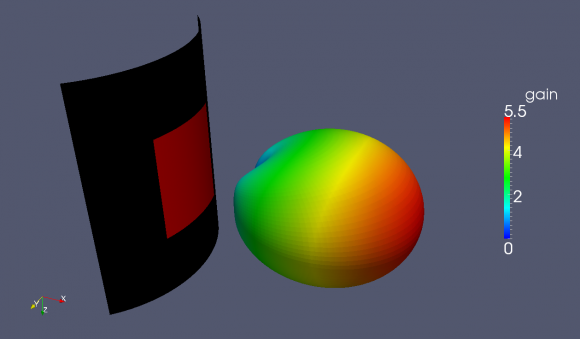

Tutorial: Bent Patch Antenna
From openEMS
- Download the latest matlab file using gitweb: Bent_Patch_Antenna.m
Contents |
Requirements
- openEMS v0.0.31 or later
This tutorial covers
- setup of a Bent Patch Antenna (see for comparison: Tutorial: Simple Patch Antenna)
- setup of a cylindrical FDTD mesh
- calculate the S-Parameter and input impedance
- calculate far-field pattern 2D/3D
Matlab Simulation Script
- Start the script within an empty environment:
close all clear clc
- Specify drawing units
physical_constants;
unit = 1e-3; % all length in mm
- Specify the patch size, substrate properties, and feed point
% patch width in alpha-direction patch.width = 32; % resonant length in alpha-direction patch.radius = 50; % radius patch.length = 40; % patch length in z-direction %substrate setup substrate.epsR = 3.38; substrate.kappa = 1e-3 * 2*pi*2.45e9 * EPS0*substrate.epsR; substrate.width = 80; substrate.length = 90; substrate.thickness = 1.524; substrate.cells = 4; %setup feed point feed.pos = -5.5; %feeding position in x-direction feed.width = 2; %feeding port width feed.R = 50; %feed resistance
- Set up the simulation
Note that the coordinate system is set to cylindrical.
% size of the simulation box SimBox.rad = 2*100; SimBox.height = 1.5*200; %% setup FDTD parameter & excitation function FDTD = InitFDTD('CoordSystem', 1); % init a cylindrical FDTD f0 = 2e9; % center frequency fc = 1e9; % 20 dB corner frequency FDTD = SetGaussExcite( FDTD, f0, fc ); BC = {'MUR' 'MUR' 'MUR' 'MUR' 'MUR' 'MUR'}; % boundary conditions FDTD = SetBoundaryCond( FDTD, BC ); %% setup CSXCAD geometry & mesh % init a cylindrical mesh CSX = InitCSX('CoordSystem',1);
- Calculate angular sizes
Calculate angular sizes (in radians) for the patch width, substrate width, and position of the feed point.
patch_ang_width = patch.width/(patch.radius+substrate.thickness); substr_ang_width = substrate.width/patch.radius; feed_angle = feed.pos/patch.radius;
- Now create the objects
Note that although the patch and substrates are curved objects, the function AddBox is used. In a cylindrical coordinate system the start/stop coordinates are in the form [ radius azimuth z ].
%% create patch CSX = AddMetal( CSX, 'patch' ); % create a perfect electric conductor (PEC) start = [patch.radius+substrate.thickness -patch_ang_width/2 -patch.length/2 ]; stop = [patch.radius+substrate.thickness patch_ang_width/2 patch.length/2 ]; CSX = AddBox(CSX,'patch',10,start,stop); % add a box-primitive to the metal property 'patch' %% create substrate CSX = AddMaterial( CSX, 'substrate' ); CSX = SetMaterialProperty( CSX, 'substrate', 'Epsilon', substrate.epsR, 'Kappa', substrate.kappa ); start = [patch.radius -substr_ang_width/2 -substrate.length/2]; stop = [patch.radius+substrate.thickness substr_ang_width/2 substrate.length/2]; CSX = AddBox( CSX, 'substrate', 0, start, stop);
- Add a dump box for the surface current on the patch
CSX = AddDump(CSX, 'Jt_patch','DumpType',3,'FileType',1); start = [patch.radius+substrate.thickness -substr_ang_width/2 -substrate.length/2]; stop = [patch.radius+substrate.thickness +substr_ang_width/2 substrate.length/2]; CSX = AddBox( CSX, 'Jt_patch', 0, start, stop );
- A ground plane is placed on the backside of the substrate
Note that this metal structure has zero thickness.
CSX = AddMetal( CSX, 'gnd' ); % create a perfect electric conductor (PEC) start = [patch.radius -substr_ang_width/2 -substrate.length/2]; stop = [patch.radius +substr_ang_width/2 +substrate.length/2]; CSX = AddBox(CSX,'gnd',10,start,stop);
- Add an excitation port
start = [patch.radius feed_angle 0]; stop = [patch.radius+substrate.thickness feed_angle 0]; [CSX port] = AddLumpedPort(CSX, 50 ,1 ,feed.R, start, stop, [1 0 0], true);
- Define the mesh
The simulation space is a C-shaped extrusion which extends from -135° to +135° in azimuth.
% detect all edges mesh = DetectEdges(CSX); % add the simulation domain size mesh.r = [mesh.r patch.radius+[-20 SimBox.rad]]; mesh.a = [mesh.a -0.75*pi 0.75*pi]; mesh.z = [mesh.z -SimBox.height/2 SimBox.height/2]; % add some lines for the substrate mesh.r = [mesh.r patch.radius+linspace(0,substrate.thickness,substrate.cells)]; % generate a smooth mesh with max. cell size: lambda_min / 20 max_res = c0 / (f0+fc) / unit / 20; max_ang = max_res/(SimBox.rad+patch.radius); % max_res in radians mesh = SmoothMesh(mesh, [max_res max_ang max_res], 1.4); disp(['Num of cells: ' num2str(numel(mesh.r)*numel(mesh.a)*numel(mesh.z))]); CSX = DefineRectGrid( CSX, unit, mesh );
- Create a NF2FF box
Again, even though this is called a box, because the coordinate system is set to cylindrical, the arguments will be assumed as [ radius azimuth z ].
%% create nf2ff, keep some distance to the boundary conditions, e.g. 8 cells pml start = [mesh.r(4) mesh.a(8) mesh.z(8)]; stop = [mesh.r(end-9) mesh.a(end-9) mesh.z(end-9)]; [CSX nf2ff] = CreateNF2FFBox(CSX, 'nf2ff', start, stop, 'Directions',[1 1 1 1 1 1]);
- Save and run the simulation
%% prepare simulation folder & run Sim_Path = ['tmp_' mfilename]; Sim_CSX = [mfilename '.xml']; [status, message, messageid] = rmdir( Sim_Path, 's' ); % clear previous directory [status, message, messageid] = mkdir( Sim_Path ); % create empty simulation folder % write openEMS compatible xml-file WriteOpenEMS( [Sim_Path '/' Sim_CSX], FDTD, CSX ); % show the structure CSXGeomPlot( [Sim_Path '/' Sim_CSX] ); % run openEMS RunOpenEMS( Sim_Path, Sim_CSX);
Post Processing
- Plot the feed-point impedance and reflection coefficient
freq = linspace( max([1e9,f0-fc]), f0+fc, 501 ); port = calcPort(port, Sim_Path, freq); Zin = port.uf.tot ./ port.if.tot; s11 = port.uf.ref ./ port.uf.inc; P_in = 0.5*real(port.uf.tot .* conj(port.if.tot)); % antenna feed power % plot feed point impedance figure plot( freq/1e6, real(Zin), 'k-', 'Linewidth', 2 ); hold on grid on plot( freq/1e6, imag(Zin), 'r--', 'Linewidth', 2 ); title( 'feed point impedance' ); xlabel( 'frequency f / MHz' ); ylabel( 'impedance Z_{in} / Ohm' ); legend( 'real', 'imag' ); % plot reflection coefficient S11 figure plot( freq/1e6, 20*log10(abs(s11)), 'k-', 'Linewidth', 2 ); grid on title( 'reflection coefficient S_{11}' ); xlabel( 'frequency f / MHz' ); ylabel( 'reflection coefficient |S_{11}|' ); drawnow
- Determine the resonant frequency and save the current distribution for plotting
This is done by finding the frequency index for the minimum value of s11, and then using the index to determine the frequency.
%find resonance frequency from s11 f_res_ind = find(s11==min(s11)); f_res = freq(f_res_ind); %% disp('dumping resonant current distribution to vtk file, use Paraview to visualize'); ConvertHDF5_VTK([Sim_Path '/Jt_patch.h5'],[Sim_Path '/Jf_patch'],'Frequency',f_res,'FieldName','J-Field');
- Calculate and plot the far-field patterns etc.
% calculate the far field at phi=0 degree nf2ff = CalcNF2FF(nf2ff, Sim_Path, f_res, [-180:2:180]*pi/180, 0,'Center',[patch.radius+substrate.thickness 0 0]*unit, 'Outfile','pattern_phi_0.h5'); % normalized directivity as polar plot figure polarFF(nf2ff,'xaxis','theta','param',1,'normalize',1) % calculate the far field at phi=0 degree nf2ff = CalcNF2FF(nf2ff, Sim_Path, f_res, pi/2, (-180:2:180)*pi/180,'Center',[patch.radius+substrate.thickness 0 0]*unit, 'Outfile','pattern_theta_90.h5'); % normalized directivity as polar plot figure polarFF(nf2ff,'xaxis','phi','param',1,'normalize',1) % display power and directivity disp( ['radiated power: Prad = ' num2str(nf2ff.Prad) ' Watt']); disp( ['directivity: Dmax = ' num2str(nf2ff.Dmax) ' (' num2str(10*log10(nf2ff.Dmax)) ' dBi)'] ); disp( ['efficiency: nu_rad = ' num2str(100*nf2ff.Prad./real(P_in(f_res_ind))) ' %']); drawnow %% disp( 'calculating 3D far field pattern and dumping to vtk (use Paraview to visualize)...' ); thetaRange = (0:2:180); phiRange = (0:2:360) - 180; nf2ff = CalcNF2FF(nf2ff, Sim_Path, f_res, thetaRange*pi/180, phiRange*pi/180,'Verbose',1,'Outfile','3D_Pattern.h5','Center',[patch.radius+substrate.thickness 0 0]*unit); figure plotFF3D(nf2ff,'logscale',-20);
Results
|

|

{kind=link}
{kind=link}
{kind=link}
{kind=link}
{kind=link}
{kind=link}
{kind=link}